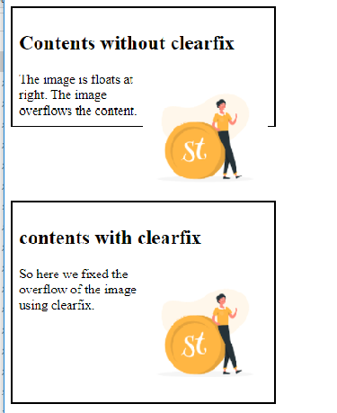
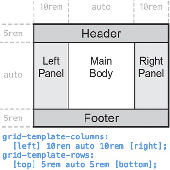

Box Model in CSS:
- The box model wraps around every HTML element and consists of content, padding, borders, and margins.
- box-sizing property defines how the total width and height of an element is calculated:
- content-box: Width and height include only content (default).
- border-box: Width and height include content, padding, and border.
Here're some pictures for better understanding of the box model in css:


Clearfix Hack:
- It ensures floated elements don’t disrupt the layout.
- Apply it to a container to contain floated child elements.
- Common use case: When a header spans the entire container, ignoring padding.

Margin Collapse:
- Top and bottom margins of adjacent elements sometimes collapse into a single margin.
- Use cases:
- Negative margins: Adjust spacing or overlap elements.
- margin auto: Center align elements horizontally.
- Negative margins can also fix layout issues.
Problem with Holy Grail Layout:
- Achieving a 3-column layout with a fixed-width center column and fluid side columns.
- Difficult due to constraints on column order and equal-height columns.
Modern Ways for Holy Grail Layout:
- Flexbox: Easier column alignment and equal heights.
- CSS Grid: Precise control over layout.
- CSS frameworks (e.g., Bootstrap) provide pre-built Holy Grail templates.
How to create a holy grail website layout using CSS grid:

Holy grail 3 column responsive layout (CSS Grid & Flexbox):